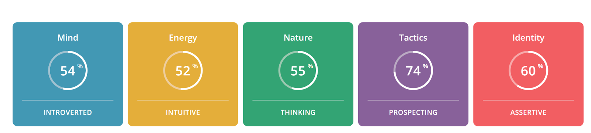

|
|
Enoch Liu RMIT Student, School of Computing Technologies Bachelor of IT, 3rd Year s3731997@student.rmit.edu.au |
Mr. Enoch Liu is a third year Bachelor of IT student at RMIT University, who has had a keen interest in computer and programming since an early age. He was born in Australia with a Chinese cultural heritage, and with parents that maintain a close connection to their birthplace, Hong Kong. Enoch is fluent in English, (as well as Python, Java, C++ and R, just joking!), and is learning to read and write Chinese and Indonesian.
Enoch grew up in Gippsland while his father completed his research in Machine Learning over there. Since then, Enoch has been traveling between Melbourne and Jakarta for a number of years, while his father served as an AUSAid advisor to the Indonesian government. Due to the frequent traveling, Enoch was educated by a private tutor while in Melbourne and aboard (online classes). At 14, Enoch passed the American SAT University Entrance Exam, scoring an outstanding result of the top 1%. He started enrolling in IT subjects at RMIT through Open University when he was 15. Currently, Enoch has completed the majority of technical subjects and a Math minor in his IT degree. COVID-19 has provided the unique opportunity for Enoch to remain in Melbourne while completing the last few subjects involving group work before he will continue on graduate studies.
Enoch is a “geek” who loves to learn about the latest innovations, technologies and games. His favorite pastimes include 1) participating in “Hackathon” which is a kind of innovation development session lasting from a day to a few days, 2) editing Wikipedia articles to improve the knowledge content and presentation, 3) researching retro games (especially Nintendo games) and learning how they work, 4) reading fan fictions that extend the fantasy in games into print media. Enoch loves to hang out at church with his friends and discuss the Bible. He also enjoys learning about Chinese culture, food, people and philosophy. Understanding his own cultural heritage gives him enormous satisfaction and it is a great way to connect with family and friends.
In particular, Enoch is an avid gamer in his spare time, whose favorite genres include platformers, fighting games and racing games . His favorites are Sonic the Hedgehog 2, Ni No Kuni, Mario Kart 8, and Minecraft. He also extends the gaming experience from reading fanfiction of those games. When he was young, Enoch always dreamed of becoming a game developer, creating excellent experiences for people to marvel at and enjoy. He tried to make games in Scratch (a block-based visual programming language) when he was 9, and at 12 he developed card games in Python. He still continues to watch indie developers, and secretly wishes that he could make cool games like them. The dream of game development was the initial spark that inspired Enoch to pursue study at RMIT and a future career in IT.
Enoch is interested in the emerging fields of Quantum Computing, Artificial Intelligence and Data Analytics in “monetizing” financial data. “Monetizing” means using data, such as customer purchasing records, to better understand their spending pattern and form targeted marketing strategies, in order to make money. Quantum computers are predicted to break the current hardware limitations of the conventional computers we use nowadays due to its much faster processing speed, and research on its programming is already under way. Artificial Intelligence is becoming more widely used in automated decision making such as search assistants and self-driving cars, in order to achieve better cost efficiency in business and convenience in everyday life. Data Analytics in monetizing financial data is revolutionizing banking, finance and insurance industries; the use of mobile payment platforms, electronic wallets and wearables are filling data depositories needed for Big Data which could then be utilized for analysis in business strategies that improve profit margins. Enoch is working to position himself to capture the opportunities arising from the disruptions these emerging technologies might bring to enable new ways of monetizing financial data.
Enoch’s earliest inspiration came from his father’s research in advanced Machine Learning algorithms. Enoch first discovered his own programming ability in Scratch (a block-based visual programming language) at 9, and later on at 12 years of age he started extensive programming after reading Python Programming for the Absolute Beginner (Dawson 2005). The programming examples in the book regarding game development sparked his ambition to write his own game in the future. Around the same time, Enoch installed Linux on an old computer and experimented with the UNIX Shell programming and Python Interpreter. He also discovered his interests in administering the local computer network at home. Enoch is currently working his first job as a part-time intern for a Data Analytic Fintech project. This project uses Big Data to represent stock market and FOREX (foreign exchange) market price discovery, and Enoch is learning more about financial market analysis from his colleagues who specialize in those areas.
The circumstances when Enoch initially enrolled at RMIT were a little unusual. After passing the American SAT exam, RMIT was the only university to accept Enoch’s enrollment when he was 15. Unlike the American universities, almost all Australian universities ruled out enrolment for a 15-year-old student but RMIT University was a noted exception. After enrolling at RMIT, Enoch learned Java and C++, and he was impressed with the teaching style and the quality of teaching materials. Enoch chose to enroll in more technical subjects first because he could complete them in his preferred order, and this flexibility fits his traveling schedule well. Most of the course materials are well-organized and easy to navigate, which helped him to succeed and achieved top marks for entrance to graduate school in the future.
During his time at RMIT, Enoch has become proficient in a number of programming languages that provide a solid foundation to enter the job market and continue graduate studies. Enoch expects to further improve the teamwork skills learnt from group projects, an ability that will be essential in future employment. In particular, he would like to focus on learning better communication with fellow team members, and how to schedule and budget to meet client’s needs and deadlines. IT exists to serve the purpose of human’s needs in business, medical, social or other settings; the technologies do not stand alone without a purpose. To learn how to realize IT’s potential in improving human life is the central issue that Enoch is keen to gain better understanding of in his remaining journey at RMIT. He will be working diligently to finalize the group projects before completing his IT degree in the next 12 months.
The above advertisement is a recruitment listing for a software developer position in a fintech company, which is a leader in payment systems and fraud detection. The role of software developer is expected to develop and maintain a new mobile payment platform, involving mobile wallets and wearables. The developer is also expected to work with other developers and analysts as a team. Secure APIs will also be developed to access the payment system, and message queues will be used to process the high amount of real time payments that will take place. This position will be challenging as real time payment processing requires fast response time and a high expectation of uninterrupted service, in order to ensure smooth financial transactions. Any service breakdowns will cause huge financial loss to the client and significantly reduce customer satisfaction. The developer is expected to be a team player who works with other IT professionals in the company.
There are a number of reasons why this job advertisement is attractive (to me personally).
Firstly, mobile payment platforms are an emerging field in IT. The challenges and career opportunities will be relatively abundant, and
the remunerations will be generous because these skills are highly sought after but the available skilled IT professionals are few. The flexible work arrangements and the opportunity to try a wide range of tasks are very
appealing to a graduate who is just starting out in the job market. Secondly, this position aligns with my own experience as an intern in a fintech project and my goal to establish myself in the technological applications in the
fintech industry. The prospect of advancing my IT career into more senior positions is excellent in a well resourced fintech firm (not a start-up), where the budget is available for a competent IT team.
Thirdly, this position is for an established company with an impressive client list, including big corporations and the government. Working in such a company will help me to develop a professional network that will enhance my career advancement in the future. The colleagues and clients who I will work with, will be important references for future employers. Finally, work experience from this company will complement my planned graduate studies in Artificial Intelligence and Quantum Computing. Automated real time payment approval is an increasingly important application area of automated decision making in Artificial Intelligence, while high-speed real-time fraud detection will be relevant to the application of Quantum Computing when the hardware becomes available.
Skills:
| Gaps in Enoch’s Current Skill Set | Plan to Improve Enoch’s Skill Set |
|---|---|
| 1) Communication and social skills in a team environment | Enoch is planning to develop better team social/communication skills from the group projects at RMIT. Interaction and communication with fellow students in group projects are valuable experiences to prepare for real job team situations. The internship also offers practical training in this area. Part-time jobs requiring teamwork helps to build confidence and acquire the skills in handling different social situations. |
| 2) writing clean, high quality code | Enoch is already a skilled programmer, but he will continue to perfect his coding skills in the Fintech internship and learn to document the codes at a very high standard. This will help other developers in the team to understand his codes and make future debugging an easier job. He will also write code that performs well. |
| 3) Experience in C# and .Net | Using his existing C++ knowledge, Enoch will learn to code C# and .NET quickly, and seek to work on projects that require C#/.NET. There are short courses available from Microsoft, which will help him get up to speed. .NET is a popular framework, and so there will be plenty of projects he can contribute to and get the necessary experience. |
| 4) Experience with SQL Server | Enoch has previous SQL knowledge from Postgres and MySQL,so he could easily pick up SQL Server’s quirks, and he plans to continue working on other databases using SQL, as there will still be a demand for database administrators. |
| 5) Message queueing experience | Enoch will actively seek learning opportunities on message queue protocols and clients, such as Rabbit AMQP. This is not a mandatory requirement, but it will be useful to find other internships in this area. |
| 6) A tertiary degree in IT or engineering | Enoch plans to complete the Bachelor of IT at RMIT in the next 12 months. It will give confidence to his prospective employers that his knowledge and skills in the IT field will be adequately covered by his education, making him a suitable candidate for the job. |
The 16 Personalities test reported that that Enoch’s personality is most closely matched to the following letters:
Code: INTP-A (Introverted, iNtuition, Thinking, Perceiving, Assertive)
The percentages of the codes are shown in the following screenshot (“perceiving” is replaced by “prospecting”):

Mind (Introverted - Extraverted):This trait determines how we interact with our environment.
Energy (Intuitive - Observant): This trait shows where we direct our mental energy.
Nature (Thinking - Feeling): This trait determines how we make decisions and cope with emotions.
Tactics(Prospecting - Judging):This trait reflects our approach to work, planning and decision-making.
Identity(Assertive -Turbulent): This trait underpins all others, showing how confident we are in our abilities and decisions.
Other observations:
Type: Assertive Logician (Someone who is generally rational and confident in their judgment)
Role: Analyst (Thinkers who are creative and independent)
Strategy: Confident Individualism (Trust in themselves, and are not easily influenced by others)
The Personality Max Test gave the following scores (independent strength scale for each learning style, ranging from 0-100) for Enoch’s learning style:
Visual 62
Auditory 46
Kinesthetic 33
The relative strength for each learning style compared to the other styles (add up to a total of 100%):
Visual:44%
Auditory:33%
Kinesthetic:23%
The Personality Max Test indicated that Enoch was predominantly a Visual Learner (seeing), followed by Auditory (hearing) and then Kinesthetic (touching).
This test measures the following five factors that are considered to be a good guide for a person:
O:Openness
C:Conscientiousness
E:Extraversion
A:Agreeableness
N:Neuroticism
The Results:
Openness 56%
Conscientiousness 21%
Extraversion 69%
Agreeableness 81%
Neuroticism 35%
The results indicate that Enoch is 1) relatively open to new experiences, 2) impulsive and easily side-tracked, 3) extraverted - seek external stimulus and actively engage other people, 4) highly agreeable - prioritizing other people’s needs over his own, and 5) less likely to respond to stressors with negative emotions, than the average person
The results seem to describe me reasonably well. The Myers-Briggs Test results (INTP-A) suggest that I am a rational, confident and independent person, who is well suited to the role of an analyst. I completely agree. The Learning Style Test indicated that I am a predominantly visual learner, which is also accurate. The Big Five Personality Test described me as open, impulsive, extraverted, highly agreeable and less likely to stress. Most of this result is accurate, but the extraversion is directly contradictory to the Myers-Briggs Test result of INTP-A. It is possible that I am a borderline case and the definitions of both tests on introversion-extraversion are slightly different. I suspect another reason I am classified as extraverted in one test and introverted in the other is that I am good at meeting people, but not very good at maintaining social conversations. Verbal communication is challenging for me, and I should not actively pursue a vocation that mainly relies on it. The results also show my tendency to get bored with unchallenging tasks, which is why I did some of the third year programming courses before many of the first year courses. I should try to work on verbal communication and learn to manage boredom to complete tasks properly.
As a member of a team, my open and agreeable nature would enable me to readily accept other members’ ideas and accommodate their plans. Being a visual learner means that I am capable of processing a large amount of information quickly, making it easier for me to pick up new technologies and programming languages. I would jump at the opportunity to try out new innovations, perhaps sometimes impulsively, but I would always listen to constructive comments from other members and not feel stressed about criticism. However I may not be good at explaining my complicated ideas to other people, or when pushed to do so, I may go into too much detail. I would be quite flexible with changes in plans, however, I do have a tendency to become bored quickly if the work is not challenging enough. If I lose interest, it would be a big struggle for me to produce quality contributions and the team leader might have to swap me into more challenging tasks.
I will probably work best if given a challenging technical task to complete and also the flexibility to propose innovative solutions. I will need support in highly collaborative teamwork to develop the necessary skills in communication, and written communication with diagrams would be a good way for me to present complex ideas to fellow members. Since I have taken several programming courses, I would probably be able to figure out quickly what will and won’t work in programming tasks. I could be relied upon to complete programming tasks in an efficient manner and conduct a very meticulous final proofread, but should not be the one responsible for making things look visually attractive. These three personal profile tests each have their own limitations, they tend to provide some accurate descriptions to a person but the borderline cases can result in contradictory conclusions. Many shortcomings identified could be improved with time and extra training. My self evaluation could also contain subjective bias and I may not realize how others may view me completely differently. It is important not to take these results too seriously, feel confident about myself and seek opportunities to improve my skill set wherever possible. A positive attitude is very important in teamwork and employers tend to overlook a missing job requirement if you are willing to improve and have a good attitude.
This project, Sport-R-Us, is an application that will provide customizable sports coverage through smartphone apps and smart home devices (like the Google Nest Hub and Google Nest Mini or the Amazon Echo Show and the Amazon Echo Dot). Its main goal is to entertain users by sending real time sports news. Users can customize the coverage depending on their needs and situations. For example, a taxi driver can only listen to the sports news while working; in other situations, a full screen with the video footage of the sports is preferable. Sport-R-Us will cover many different types of sports, e.g. football, cricket and baseball.
Sport is one of the most watched forms of entertainment in the world, with 4 billion fans of football and 2.5 billion fans of cricket (Shvili 2020). In the past, sports fans accessed entertainment through TV and radio but many complained about the limitations, such as advertisements, and sports news was often delayed. Many fans wished to listen to their favorite music or radio program, while being able to be updated with the latest development of the sports games as it happened. The motivation for Sport-R-Us is therefore to provide a customizable sport entertainment service that can adapt to different users with their own needs.
Australian sport fans are the intended audience for the app, particularly football, baseball, and cricket fans. Sport fans will be able to instruct their smart devices how they would like the sport to be covered. Sport fans will be able to select from one of the three settings: A) full footage, B) display scoreboard with background music or radio program, or C) audio only announcement on key developments, for example every over or innings in cricket, or after every scoring event and end of quarters in aussie rules football. The fans will be able to choose when announcements take place: a) as it happens or b) after a song or break in the radio program, and if they want to be interrupted for the announcements.
The goal of Sport-R-Us is to provide personalized experience for different sport fans to enjoy their favorite sport matches however they like. Sport-R-Us will include player interviews, post match commentaries and other related programs, which can be selected by the sports that the user prefers. Sport-R-Us also includes a screen confirmation for sport news interruption, which makes sure the sport fans are not interrupted without acknowledgement.
In terms of sport selection, Sport-R-Us initially includes cricket, aussie rules football, baseball, netball, swimming, cricket and basketball, for they are the most watched sports in Australia. There will be further sports available, depending on the information availability and audienceship.
Fans using Sport-R-Us will have a menu to choose their personalized settings. A central server receives the incoming news and live scores into a database. These news are then disseminated to sport fans according to their personalized settings. Live scores of matches and news articles will be made available to the sport fans as soon as it becomes available.
Sport-R-Us will also use the displays on the smart devices for live scores, match data and sports news. The live scores display is customized to the type of games (i.e Aussie Rules shows when the quarter will end, and cricket shows the progress of the current over), and according to the sport fan’s settings. Users are able to subscribe to the service with a small monthly fee, in exchange for an advertisement free experience. Marketing companies can also pay our service to broadcast short advertisements to non-paying subscribers.
In future, Sport-R-Us can be extended to smart watches and other wearables, and get sponsorships from big corporations for long term financial support. The data collected from the app users could be sold to the marketing companies to increase the sales revenues of ticketing by dynamic pricing based on user profiling.
The software: Software development kits, e.g. Google Assistant SDK, Alexa Auto SDK, Siri APIs used to get the live scores, matches and sports news The hardware: Smart devices for testing, e.g. Google Home, Amazon Echo Dot, Homepod Development laptop A cloud server to store the news and live scores used in the app Other equipments: Internet connection, for the server to push out the information required. Advertisement servers to provide the advertisements for non paying subscribers who access the service.
Required skills: Programming skills Database skills Software on the smart devices. This software would allow fans to select what data they would like to receive, and filter the data, in accordance to that preference. Software on the server. This software would be getting sports data from the sources, and pushing the data to the clients. Required special hardware: Smart devices for testing. All required skills, software and hardware required are relatively easy to find: Programming skills and database skills can be found in the labor market easily Software on the smart device would need to be written, however there is plenty of existing code to reference. The smart devices can be bought easily in Australia.
Two measures will be used to determine the success of Sport-R-Us: 1) the number of downloads, and 2) the average star ratings of the app. The more downloads, the more people have seen Sport-R-Us , and the higher the average star rating, the more people like the project.
If Sport-R-Us is successful, it will improve how sport fans enjoy their sport matches. By allowing fans to more easily customize their sport entertrainment notifications, sport fans do not have to listen to the radio program which they may not enjoy. Instead, they will have full control on how they enjoy their sports entertainment.